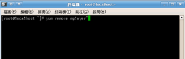
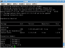
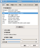
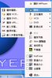
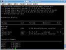
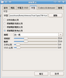
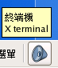
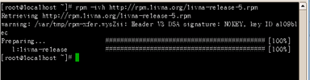
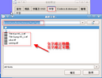
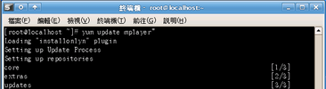

COSA活動記錄簿
留下COSA所辦活動之紀錄
首頁
相簿目錄
::
最新上傳
::
最新留言
::
熱門圖片
::
最高評分
相簿首頁
>
網站發佈相關圖檔
>
AP_MPlayer
AP_MPlayer
標題
+
-
檔名
+
-
日期
+
-
位置
+
-

110 次觀看

101 次觀看

114 次觀看

84 次觀看

99 次觀看

96 次觀看

109 次觀看
104 次觀看

106 次觀看

86 次觀看
94 次觀看

100 次觀看
12 張圖片，共 1 頁